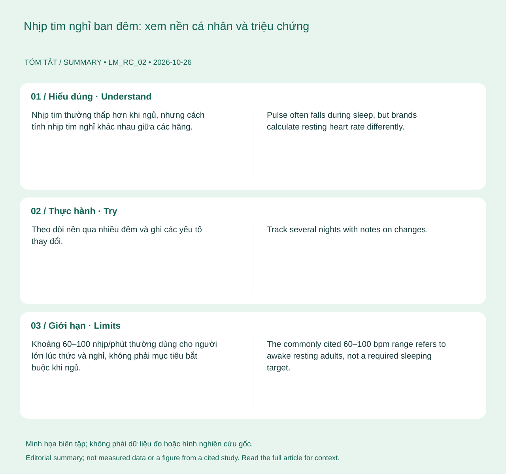

Theo dõi nền qua nhiều đêm và ghi các yếu tố thay đổi. Nếu kết quả bất thường, kiểm tra cách đeo và đo mạch lúc nghỉ khi thức. Kết hợp cảm giác cơ thể trước khi quyết định tập luyện.
Hiểu đúng
Nhịp tim thường thấp hơn khi ngủ, nhưng cách tính nhịp tim nghỉ khác nhau giữa các hãng. Nhiệt độ, thuốc, bệnh, rượu và vận động đều có thể ảnh hưởng. Một đường nhịp tim không đủ để xác định cơ thể đang tiêu hóa hay đã phục hồi xong. 12

📊 Sơ đồ tóm tắt do biên tập tạo. Không phải số liệu đo, hình giải phẫu hay hình lấy từ nghiên cứu trích dẫn.(Mở sơ đồ tóm tắt biên tập ↗)
Bạn có thể làm gì?
Theo dõi nền qua nhiều đêm và ghi các yếu tố thay đổi. Nếu kết quả bất thường, kiểm tra cách đeo và đo mạch lúc nghỉ khi thức. Kết hợp cảm giác cơ thể trước khi quyết định tập luyện.
Giới hạn cần biết
Khoảng 60–100 nhịp/phút thường dùng cho người lớn lúc thức và nghỉ, không phải mục tiêu bắt buộc khi ngủ. Người tập bền hoặc dùng thuốc có thể có mạch thấp hơn.
Khi nào cần tư vấn?
Mạch đột ngột rất khác nền kèm đau ngực, khó thở hoặc ngất cần cấp cứu. Thay đổi kéo dài cần được khám.
Cập nhật nội dung và nguồn: 2026-10-26. Nội dung giáo dục; chưa có xác nhận duyệt bởi bác sĩ.
📚
Nguồn tham khảo và giới hạn bằng chứng
Nguồn chính: American Heart Association — All About Heart Rate. Các nguồn bổ sung và phạm vi hỗ trợ được liệt kê trong bài. Cập nhật 26/10/2026; chưa có xác nhận duyệt bởi bác sĩ.
Track several nights with notes on changes. Check fit and measure your awake resting pulse if a reading seems unusual. Include how you feel when deciding whether to train.
Understanding the topic
Pulse often falls during sleep, but brands calculate resting heart rate differently. Temperature, medication, illness, alcohol and activity can affect it. A curve alone cannot show exactly what your body is doing. 12
📊 Original editorial summary. Not measured data, an anatomical diagram or a figure reproduced from a cited study.(Editorial summary artwork ↗)
What you can do
Track several nights with notes on changes. Check fit and measure your awake resting pulse if a reading seems unusual. Include how you feel when deciding whether to train.
What the evidence cannot tell you
The commonly cited 60–100 bpm range refers to awake resting adults, not a required sleeping target. Training and medication can lower pulse.
When to seek advice
A sudden major pulse change with chest pain, breathlessness or fainting needs emergency care. Persistent unexplained change warrants assessment.
Content and sources updated: 2026-10-26. Educational content; clinical sign-off has not been recorded.
📚
References and evidence limits
Primary reference: American Heart Association — All About Heart Rate. Additional sources and their scope appear in the article. Updated 26 October 2026; clinical sign-off has not been recorded.